Selected Works
A curated collection of software engineering, quantum computing, artificial intelligence, blockchain, computer vision, and research projects that showcase my technical expertise, problem-solving approach, and passion for building impactful solutions.
Quantum Computing · Research · Web Development
AQCA: All Quantum Computing Algorithms
State-of-the-art educational atlas & interactive simulation platform mapping 19 foundational and advanced quantum algorithms, communication protocols, phase/amplitude models, and fault-tolerant stabiliser codes.
HTML5 · CSS3 · JavaScript · MathJax v3 · Chart.js · Python · Qiskit
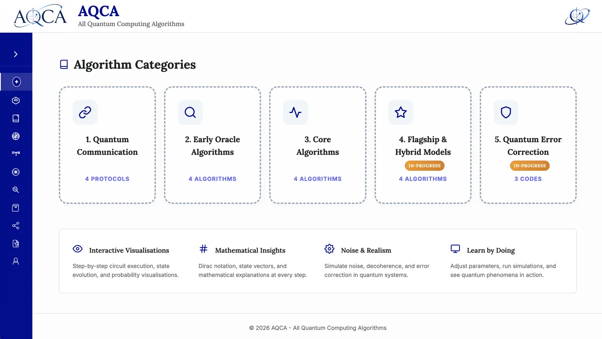
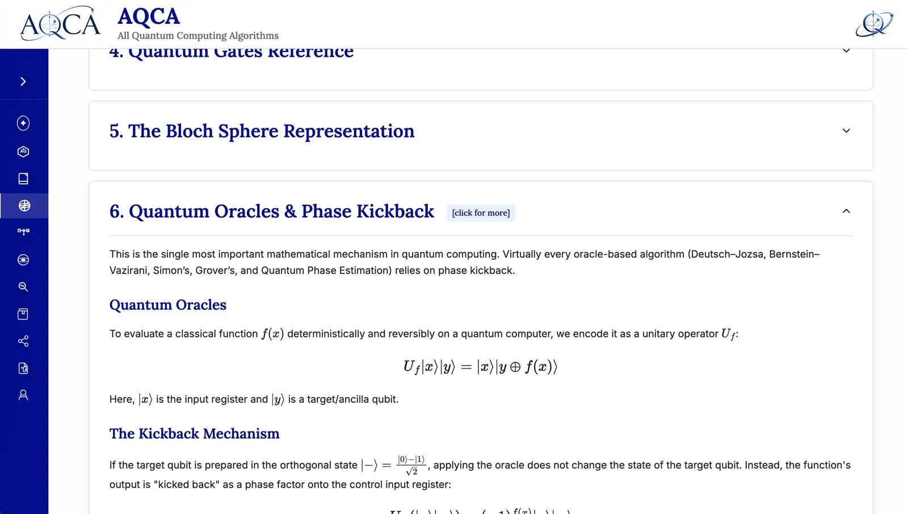
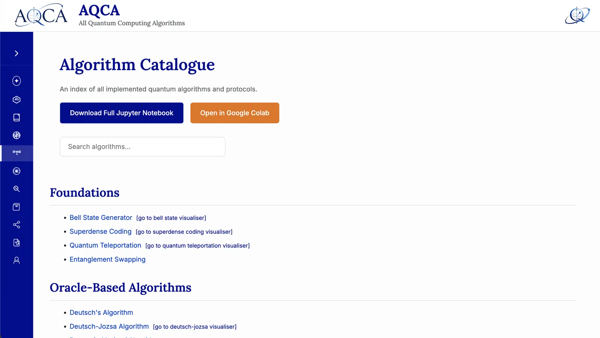
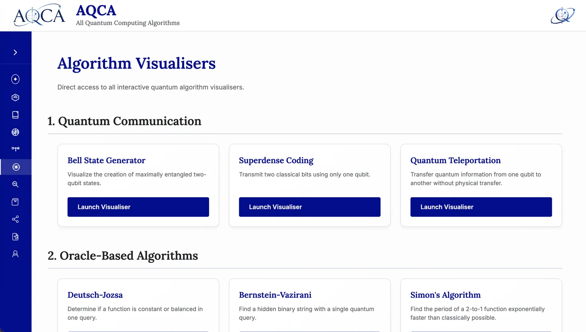
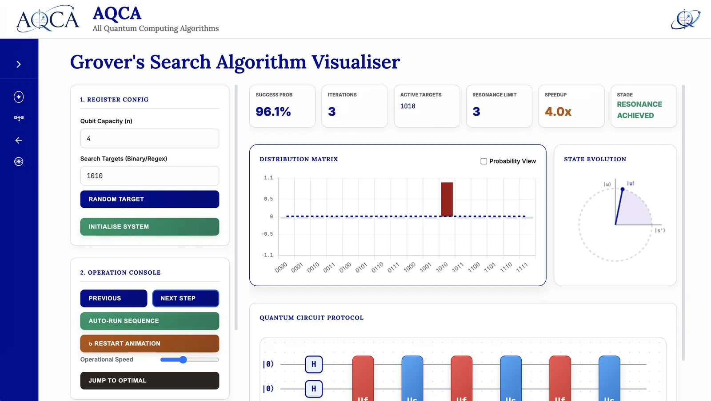
Quantum Computing · Research · Web Development
BB84 Quantum Key Distribution Simulator
Browser-based simulator of the complete BB84 protocol with photon transmission, reconciliation, and privacy amplification.
JavaScript · HTML5 · CSS3 · KaTeX · Canvas API


Web Development · AI · Computer Vision
EduPresence
A next-generation Learning Management System that automates attendance through face recognition and QR verification, integrates live classrooms via Jitsi Meet, and simplifies academic management with secure Google OAuth.
Python · Flask · OpenCV · Google OAuth
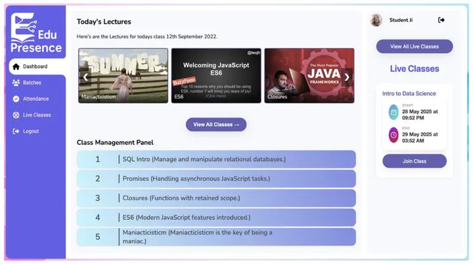
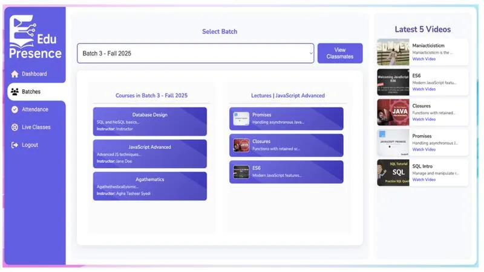
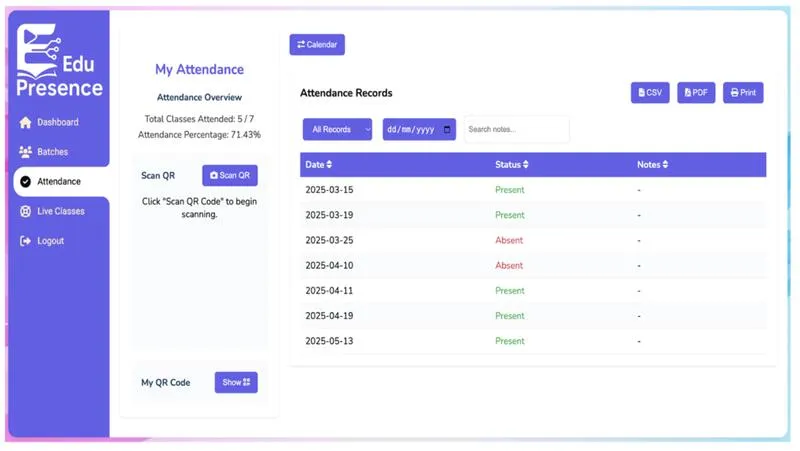
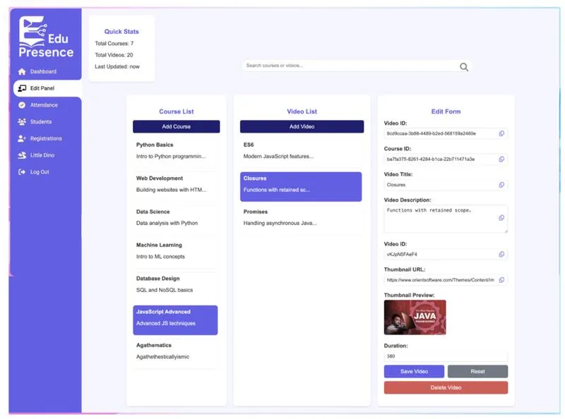
Blockchain · Web Development · Cryptography
VOYAGE
A decentralized, blockchain-based social media platform built around data privacy. SHA-1 hashing guarantees data integrity while Fernet encryption secures file uploads — no central authority owns your data.
Blockchain · Cryptography · SHA-1 · Fernet
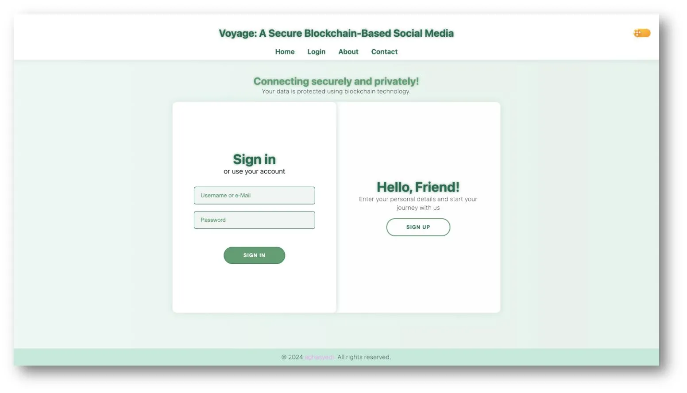
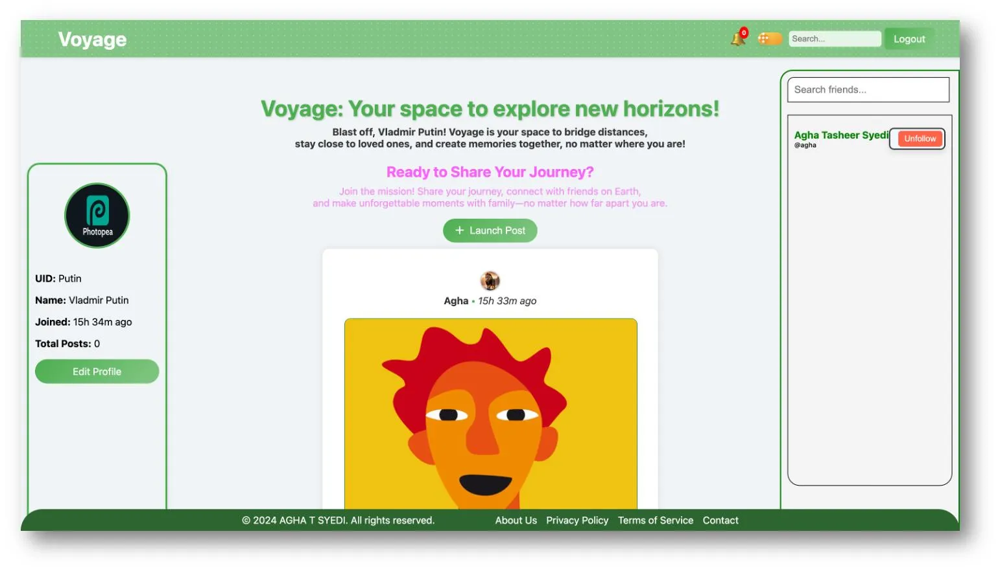
Web Development · Full Stack
Student Management System
A full-stack academic management platform for handling student records, course enrollment, exam scheduling, and faculty workflows — powered by Java Servlets and MongoDB with AJAX-driven dynamic updates.
Java · Servlets · JSP · MongoDB · AJAX
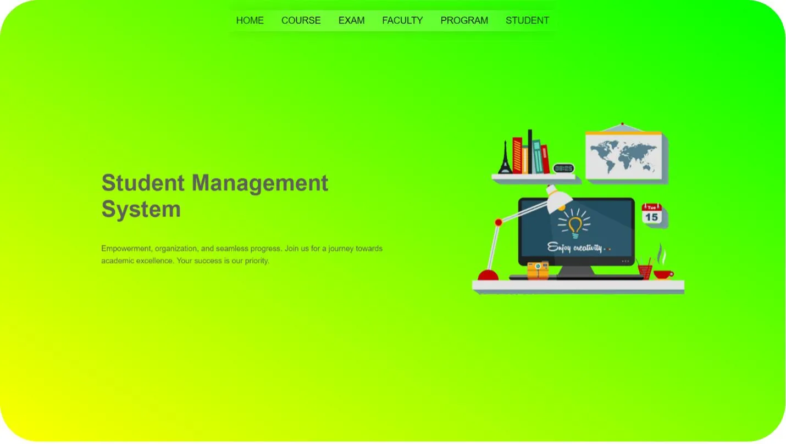
Scientific Computing · Compilers
C Program Tokenizer
A hand-built lexer that decomposes C source code into its constituent tokens — keywords, identifiers, constants, operators, and symbols — providing the foundational stage of a compiler's front end.
C
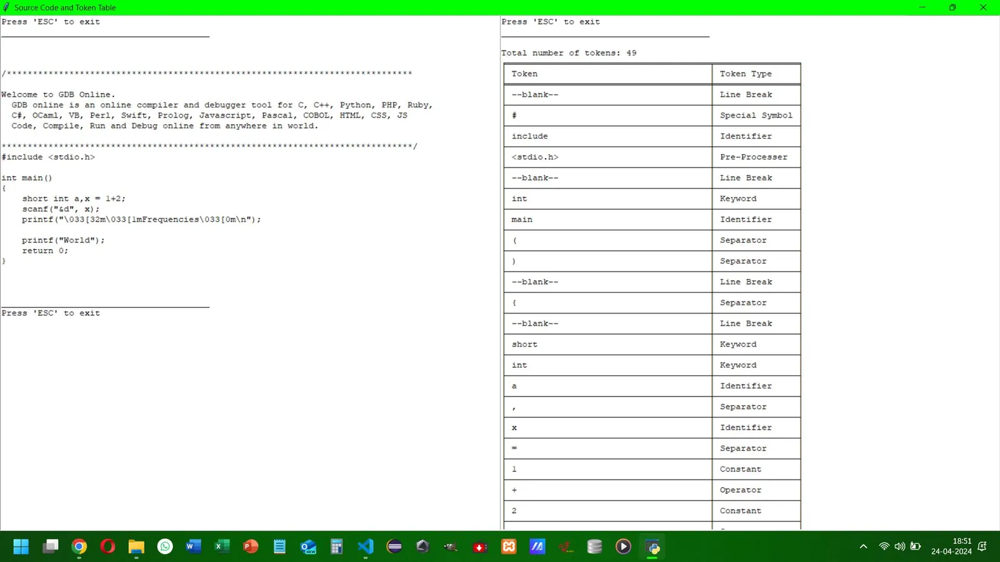
Desktop Application · Automation
College Attendance System
A desktop attendance management tool built with Python and Tkinter. Tracks student attendance via SQL, calculates real-time percentages, and automates record-keeping through Selenium browser integration.
Python · Tkinter · SQL · Selenium
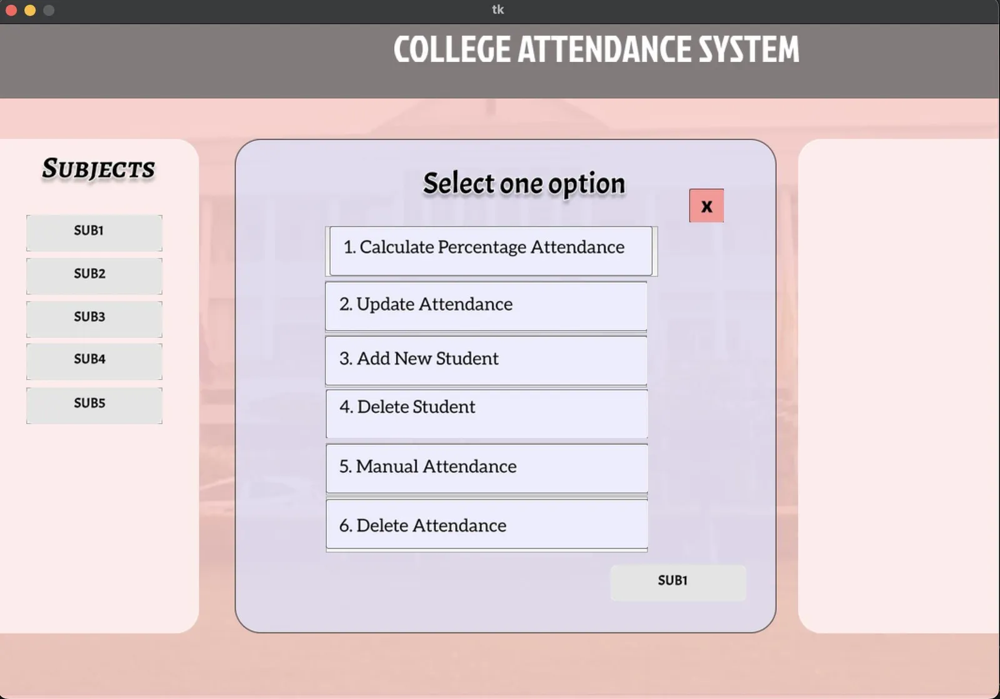
Web Development · Industrial Training
AVingenious Clone Website
A pixel-faithful reproduction of a corporate website built during industrial training. Demonstrates production-grade HTML, CSS, and JavaScript skills through faithful replication of a real-world design system.
HTML · CSS · JavaScript
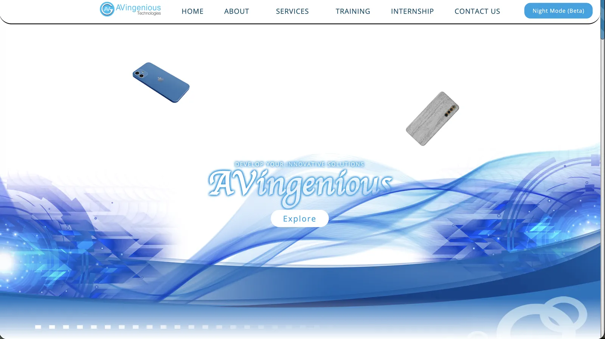
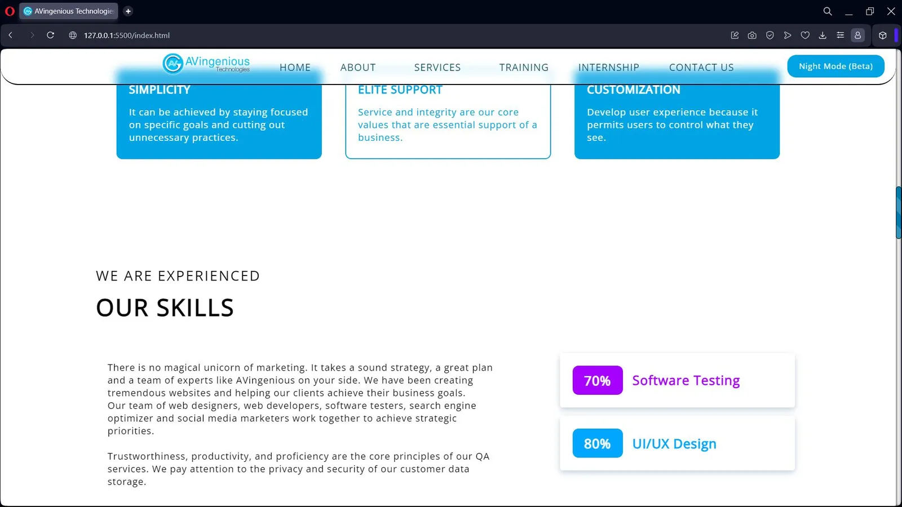
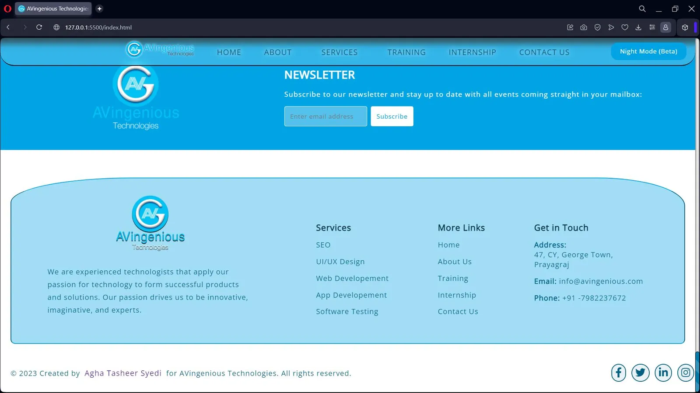